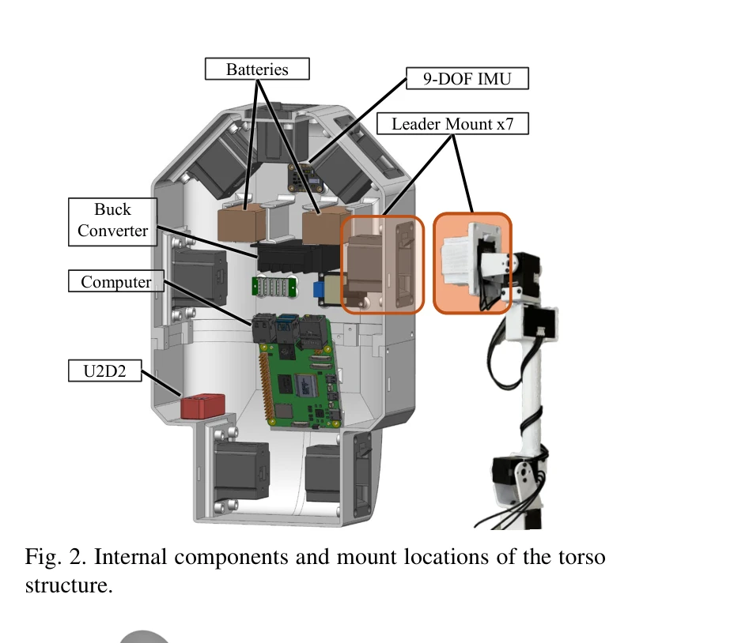

Essence

Fig. 1. Overview of CHILD humanoid teleoperation system.
CHILD는 베이비 캐리어 크기의 컴팩트한 텔레오퍼레이션 장치로, 직접 관절 매핑을 통해 휴머노이드 로봇의 전신 관절 수준 제어를 가능하게 하는 시스템이다.
저자: Noboru Myers, Obin Kwon, Sankalp Yamsani, Joohyung Kim | 날짜: 2025-07-31 | URL: https://arxiv.org/abs/2508.00162
Fig. 1. Overview of CHILD humanoid teleoperation system.
CHILD는 베이비 캐리어 크기의 컴팩트한 텔레오퍼레이션 장치로, 직접 관절 매핑을 통해 휴머노이드 로봇의 전신 관절 수준 제어를 가능하게 하는 시스템이다.
Fig. 1. Overview of CHILD humanoid teleoperation system.

Fig. 2. Internal components and mount locations of the torso
총평: 이 논문은 전신 humanoid 텔레오퍼레이션을 위한 직접 관절 매핑 방식을 최초로 제시하였으며, 베이비 캐리어를 활용한 혁신적이고 저비용의 하드웨어 설계와 오픈소스 공개를 통해 robotics 커뮤니티에 실질적인 기여를 제공한다.